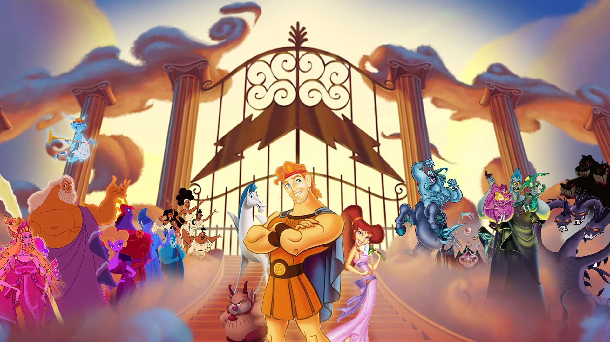

Hercules, in Greek mythology, had a complex family and relationships. Here are some key members of Hercules’ family and notable individuals in his life:

Parents:
Zeus: Hercules was the son of Zeus, the king of the gods. His divine parentage granted him extraordinary strength and abilities.
Alcmena: Alcmena, a mortal woman, was Hercules’ mother. She was married to Amphitryon but had a night with Zeus, resulting in Hercules’ birth.
Siblings:
Iphicles: Iphicles was Hercules’ mortal half-brother, the son of Alcmena and Amphitryon. He did not share Hercules’ divine strength.
Spouse:
Megara: Hercules married Megara, the daughter of Creon, king of Thebes. Tragically, due to Hera’s influence, Hercules killed Megara and their children in a fit of madness.
Children:
Hyllus: Hyllus was one of Hercules’ sons, and he played a significant role in continuing the hero’s legacy.
Telephus: In some versions, Telephus is considered Hercules’ son, born from a union with the princess Auge.
Friends and Allies:
Iolaus: Iolaus was a close companion and nephew of Hercules. He often accompanied Hercules on his journeys and adventures.
Atlas: In one of Hercules’ labors, he sought the help of Atlas to retrieve the golden apples. Atlas held up the heavens and briefly took Hercules’ place during the task.
Teachers and Mentors:
Chiron: Chiron, the wise centaur, served as a mentor to Hercules during his youth. Chiron provided guidance and education to the young hero.